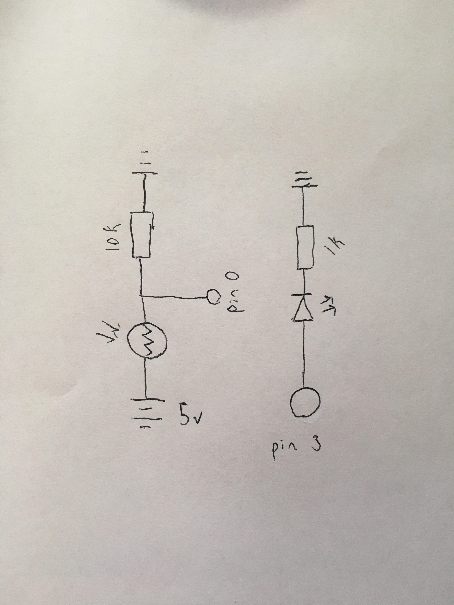

Espen Scheuers's Assignment 4!
Here is a video of assignment 3.

Here are photos of assignment 4.

The led is rated for about 20 milli amps A (=0.02A) and the arduino has 5 volts
Using Ohms law: R = V / I = 5 / 0.02 = 250) so I choose one close to that but higher 1000
For the photoresistor, it needs to provide a resistance to measure against
so I used 10k .

Here is the code for Assignment 4:
int inputPin = 0; // Sensor Pin
int ledPin = 9; // LED Pin
void setup() {
// put your setup code here, to run once:
Serial.begin(9600); //Begin serial communcation
pinMode(ledPin, OUTPUT); // initializing led pin for output
pinMode(inputPin, INPUT); // initializing sensor pin for input
}
void loop() {
// put your main code here, to run repeatedly:
int lightReading = analogRead(inputPin); // Reads sensor
lightReading = constrain(lightReading, 400, 800); // Makes sure the values are within a normal range for mapping
int LEDbrightness = map(lightReading, 400, 800, 0, 255); // Maps sensor values to appropriate output values
Serial.print(lightReading); // prints out the light reading
analogWrite(ledPin, LEDbrightness); // turns on the LED string
}